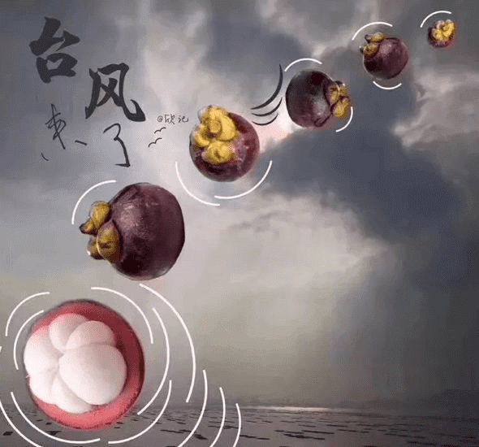
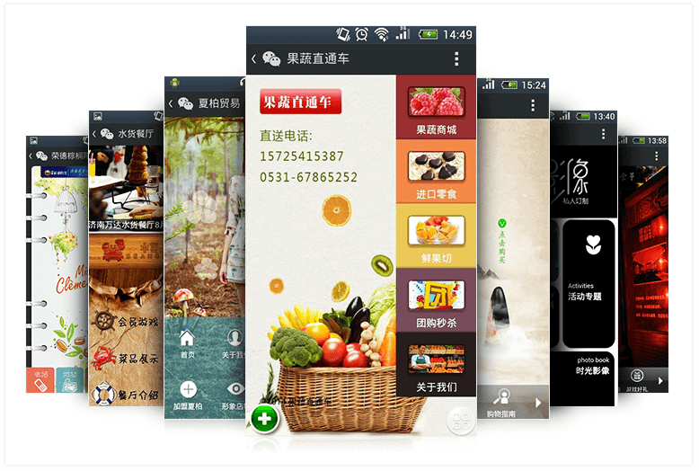

估计最近一段日子，提起“山竹”，大家第一时间想到的肯定不是水果，而是很有可能将要被除名的超强台风——山竹。
台风“山竹”是由泰国提供的。关于台风的命名，早在1997年台风委员会就提出，西北太平洋和南海产生的台风命名需要有亚洲风格，具体名字由亚太地区的14个国家和地区提供，如果不出现特殊情况，这些名字将会循环使用。
而特殊情况就是，如果某一台风对某个或多个成员国和地区造成巨大损失，该台风的名字就会被除名，由原供名国和地区用新的名字取代。
中国最早提出了十个台风名字里，有三个已经退役。
2005年，台风“龙王”登陆东南沿海，给当地造成重大经济损失和人员伤亡。于是台风委员会决定将“龙王”从台风名册中除去。“龙王”是中国提供的台风名字里第一个被除名的。后来的替代名字是“海葵”。
之后分别在2013年和2016年，台风“海燕”和台风“海马”均对人类造成重大伤亡和经济损失，它们同样被除名，并由“白鹿”和“木兰”替代。
对于台风“山竹”，内陆地区可能感受不到它的能量。“山竹”9月7日20时起编，11日08时加强为超强台风级，中心附近最大风力有17级以上（65米/秒），持续65米/秒的强度已达66小时。这样的超强台风登陆，势必对会对人类造成重大损失，所以“山竹”极有可能会被除名。身在沿海的区的人，深切明白台风的危害，对预防台风也有丰富的经验，可以总结为四个字“有备无患”。
“山竹”登陆前，有关部门就发布警告，广州、深圳、佛山等地停工、停市、停学，包括正佳广场、万达广场等商场也贴出了暂停歇业的公告。
将会受到台风影响的区民也都提前做好了准备，提前储水囤粮，很多地区的商场、超市的货物，特别是食物类物品，几乎都被买空。
当然也有一些缺乏经验没做准备而吃了大亏的人，有一位初来深圳不久的朋友，低估了台风的威力，没有提前购买物资，16日当天，狂风呼号，树木被拦腰折断，他吓得不敢出门，家里没有水，无奈之下它用牛奶煮了一锅煮……
据悉，今年亚太地区是个巨大的“风口”，截至9月14日，西北太平洋和南海共有23个台风生成，比常年同期偏多6.2个；9个台风登陆我国，比常年同期（5.4个）偏多3.6个。
而不久的未来，金融行业也将迎来一个“风口”，即移动互联网产品的大热。留心的朋友可能已经发现，很多广为人知的电商行业的大咖，都已经悄悄增建了依托于微信公众号的微官网、小程序、微商城等。毕竟微信10亿流量，这是任何商家都不能忽视的，尤其是小程序，它可以为商家提供一个免费的广告位，附近五公里的用户都能搜到。
微冠成是一家以移动互联网营销为核心的系统解决方案服务提供商，有十多年互联网产品研发经验，最新的微官网、小程序、微商城等极具时代特点，甫一上线，就成交了许多案例。未来三年内，微官网、小程序、微商城等将不是商家想不想做，而是商家不得不做的移动互联网产品。现在搭建这些产品，就是为了在将来面临的金融行业的“风口”时，有备无患。